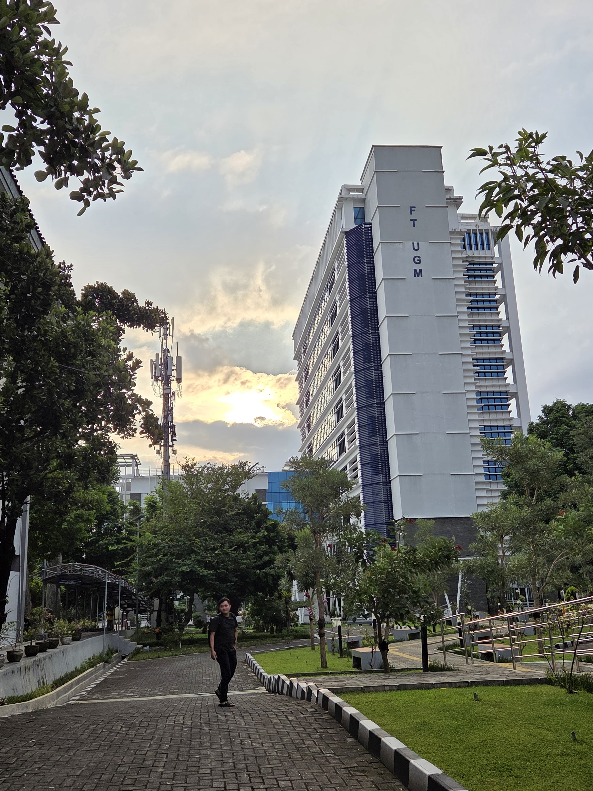

Figure
Sustainability of e-hydrogen carriers production: Techno-economic and life cycle perspectives in Saudi Arabia
Energy, 2026 (Q1, IF = 10.1)
Chemical Engineering · Sustainable Energy · Artificial Intelligence
I work at the intersection of sustainable energy systems, process systems engineering, and artificial intelligence. My research focuses on developing computational frameworks for the design, optimization, and operation of sustainable chemical and energy systems.

Research
Renewable hydrogen, ammonia, e-methanol, e-gasoline, maritime energy systems, and sustainable fuel supply chains.
Process simulation, optimization, techno-economic assessment, life cycle assessment, and process control.
Machine learning, surrogate modelling, reinforcement learning, autonomous process design, and intelligent operation.
Publications
Energy, 2026 (Q1, IF = 10.1)
Sustainable Energy Technologies and Assessments, 2026 (Q1, IF = 7.4)
BioEnergy Research, 2026 (Q1, IF = 3.3)
Resources Chemicals and Materials, 2025 (Q1, IF =10.4)
AGRARIS: Journal of Agribusiness and Rural Development Research, 2024 (Q2)
Projects
An AI-driven research framework for the design, control, and operation of sustainable chemical processes.
Aspen Plus · TEA · LCA
Machine Learning · Optimization
Control · Flexibility · Storage
Reinforcement Learning · Flowsheet Generation
MILP · RL · Distribution
Contact
For research collaboration, academic discussions, or related opportunities, feel free to get in touch.